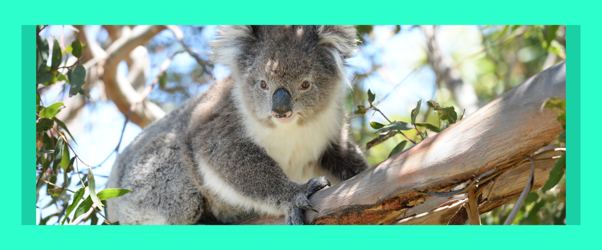
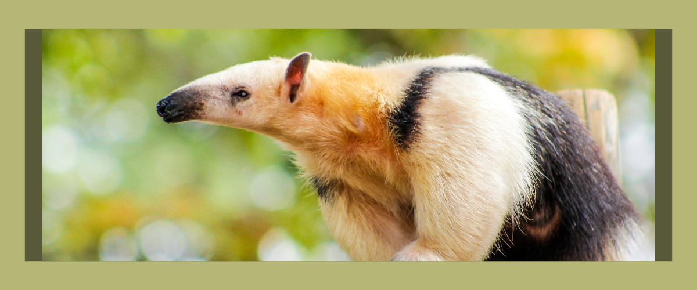
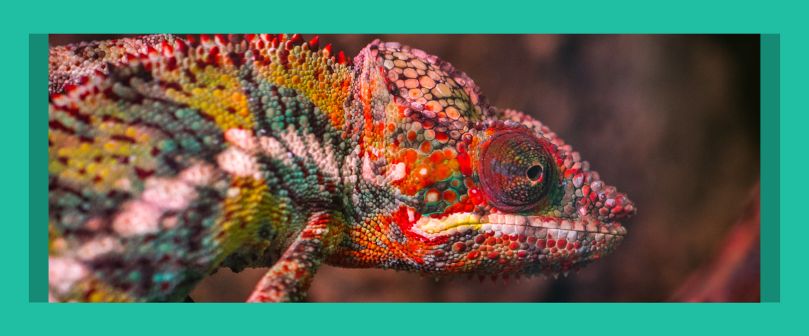
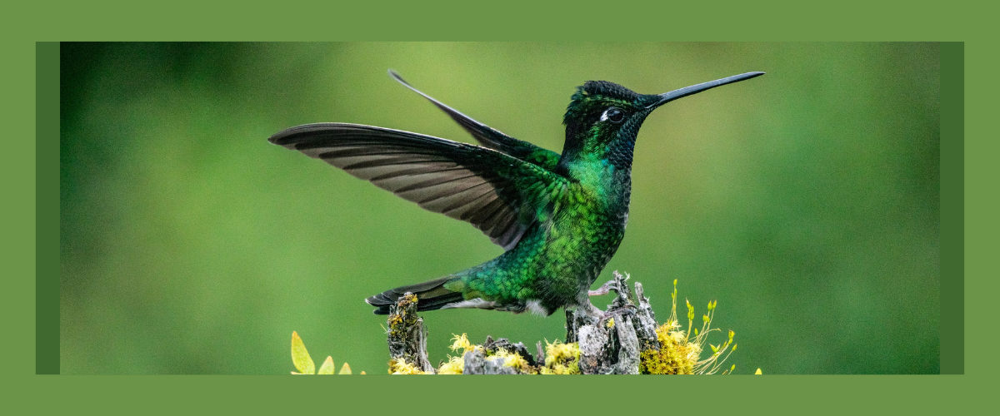
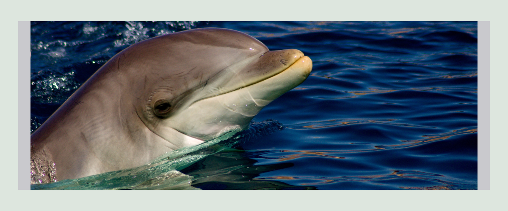
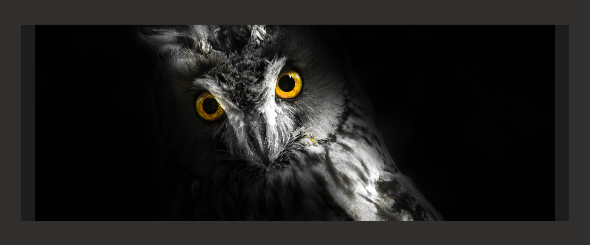
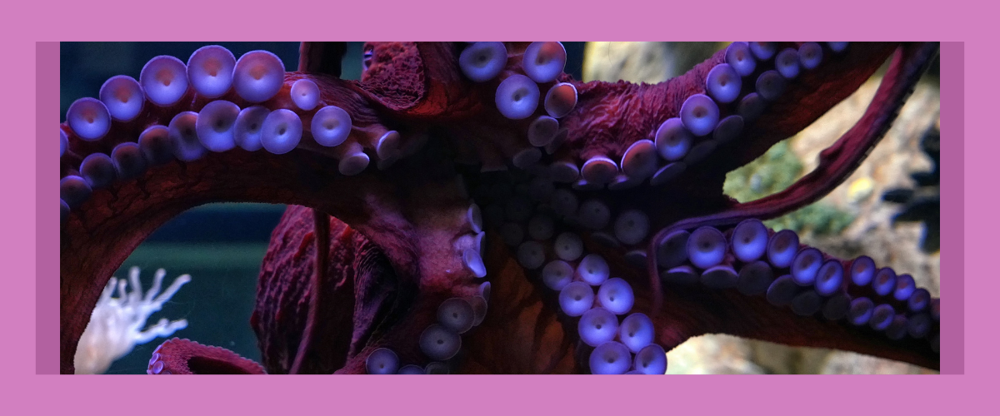
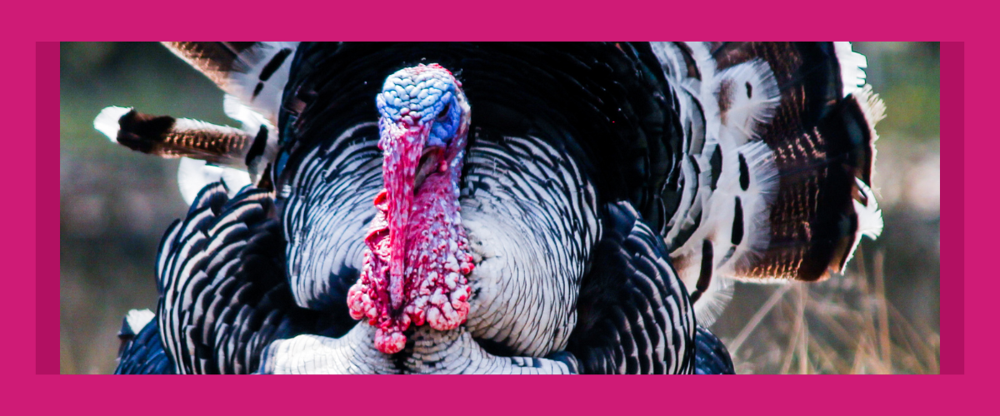
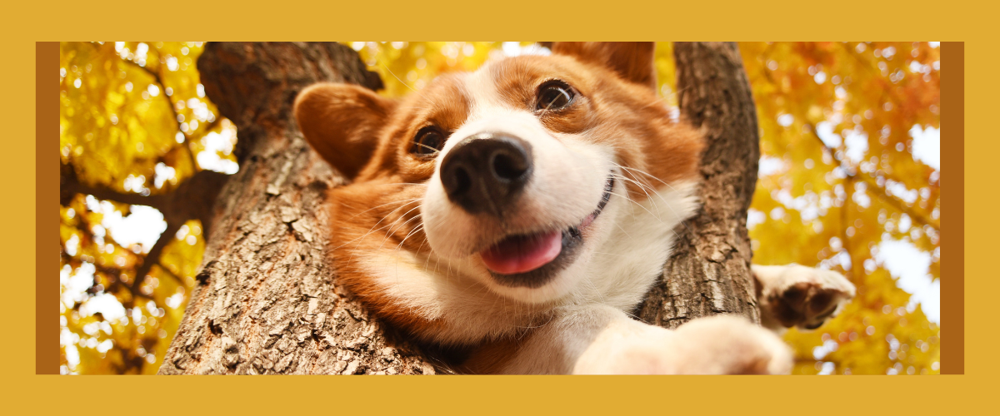

CURIOSIDADES DO MUNDO ANIMAL QUE VOCÊ NÃO CONHECIA
Quando se trata da vida animal logo imaginamos uma variedade de espécies, seres que vivem nas profundezas da terra, em densas florestas, acima das nuvens, no fundo do mar e até dentro de outros organismos. É muita coisa incrível pra se ver, por isso o Petito selecionou um apanhado de fatos curiosos que vão fazer a sua cabeça explodir!

(Fonte: Pixabay <acessado em 20/04/2023>)
O que aconteceria se os animais não existissem? Muitas incertezas poderiam ser extraídas deste questionamento, no entanto existe algo que podemos afirmar com toda a certeza, o mundo perderia muito. Confira alguns fatos relevantes:
1. Os coalas podem dormir cerca de 20 horas por dia porque sua digestão é um processo lento que demanda muita energia.
2. Além disso, os tamanduás possuem uma língua de até dois metros de comprimento para acessar alimentos em locais difíceis.
3. Curiosamente, camaleões conseguem mover cada olho em uma posição diferente, ampliando o campo de visão.
4. Um beija-flor come por dia até oito vezes o seu próprio peso por conta do gasto de energia diário.
5. Os golfinhos são as espécies mais inteligentes do reino animal, logo depois dos humanos.
6. As formigas conseguem levantar até 20 vezes o próprio peso no mundo animal.
7. As corujas possuem três pálpebras em cada olho, sendo uma para dormir, uma para piscar e a última para limpeza.
8. Com os tentáculos, os polvos podem sentir o cheiro e gosto do que tocam.
9. Curiosamente, as cabeças dos perus mudam de cor entre azul, vermelho e branco, de acordo com o seu humor.
10. Adestradores afirmam que quando os cachorros estão felizes, eles abanam os rabos para direita. Por outro lado, quando estão tristes, tendem a abaná-lo para a esquerda.
Fonte: Segredos do Mundo
Imagens: Pixabay
Obrigado pela leitura!
Tem alguma outra curiosidade que ache bacana? Nos envie pelas redes sociais.